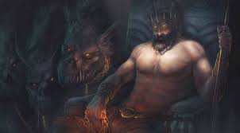
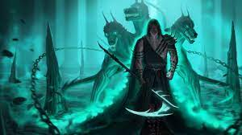
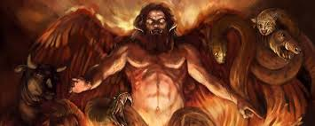
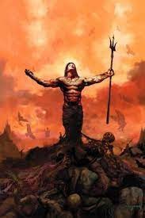

Hades Kimdir?
Hades (Antik Yunanca: Ἅιδης/ᾍδης), Yunan mitolojisinde ölülere hükmeden yeraltı tanrısıdır. Zeus, yeryüzünün hâkimiyetini kardeşleri arasında paylaşırken Zeus'a gökyüzü, Poseidon'a denizler ve Hades'e yeraltı düşer. O artık ölüler ülkesi tanrısıdır; ancak kötü değildir. Yer altının tüm hazineleri Hades'in olduğu için Romalılar onun adını varlıklı yani, Plüton olarak değiştirmiştir. Eşi, Demeter ve Zeus'un kızı Persephone'dir. Hades ve eşi Persephone amansız, insafsız, yürekleri hiçbir yakarış, hiçbir sunu ya da kurbanla yumuşamayan korkunç tanrılar olarak bilinir. Gigantlar arasındaki karşıtı Alcyoneus'dur.
Kelime anlamı olarak "Hades" görünmez manasına gelmektedir. Onu görünmez yapan bir miğferi ve Bident denen iki uçlu bir asası vardır. Bu asanın bir ucu ölümü, bir ucu yaşamı temsil etmektedir. Yeraltı zenginliklerinin sahibidir, yerden çıkan değerli metaller onu bolluk çokluk ve servet tanrısı yapmıştır. Dilediğini zengin dilediğini fakir yapardı. Acımasız ve korkunç olsa da sözünden dönmez ve birçok tanrının aksine kaprisli bir tanrı değildir. Mitolojik öykülerde adı çokça yer almaktadır. Bilinen en önemli öyküsü eşi Persephone'yi kaçırması ile ilgili olandır. Ancak Hades'in en önemli sıfatı, ölümün tanrısıdır. (Ölüm de başlıbaşına bir tanrıdır: Thanatos)
Hades aynı zamanda ölüler ülkesinin de adıdır. Hades ülkesi Asphodel, Tartarus ve Elysium olmak üzere üçe ayrılır. Ölen insanlar, fani yaşamlarında iyilerse Elysium'da, ne kötü, ne de iyilerse Asphodel'de yaşamlarını sürdürürler. Zeus ve Olimpos tanrılarının düşmanları, katiller vb. kişiler ise ceza olarak Tartarus'a atılırlar. Ayrıca Hades'in ülkesinde Phlegeton (ateş ırmağı), Lethe (unutuş ırmağı) ve tanrıların adına yemin ettikleri kutsal ırmak Styx bulunur. Zeus gibi Hades de insanlara rüyalar gönderir. Düşler yer altı dünyasından çıkarken iki kapıdan geçerler. Boynuz kapıdan çıkanlar güzel, iyi rüyalar, fildişi kapıdan çıkanlar kötü rüyalardır. Enteresandır ki, Hades'in yer altı ülkesine yaşayanlar da ölmeden geçebilmektedir. Hades'e inip de dönen kahramanlar Odysseus, Orpheus, Theseus, Herkül ve Evridiki fakat Hades'e inip de canlı dönen kahramanlardır.(Evridiki, Orfeus sayesinde neredeyse tekrar yukarı çıkabilmiştir ama Orfeus'un Hades'in şartına uymaması sonucunda Evridiki geri yeraltı ülkesine döndürülür.) Diyarın girişini üç kafalı şeytani bir köpek olan Cerberus korur. Herkes o köpeğin dehşetinden korkar ve kimse o kapıyı geçemez. Herkül bir macerasında bu köpekle yüzleşmeye gider.
Hades her ne kadar birçok zenginliğe sahip olsa da ortalıklarda pek gezinmez, övünmez, konuşmaz, diğer tanrıların Olimpos'ta katıldıkları şölenlere katılmazdı. Çünkü sahibi olduğu yeraltı ülkesi o kadar karanlık bir ülkedir ki, efendisi orayı tercih eder. Bir keresinde Poseidon, Hades'i sinirlendirmek için üç başlı çelimsiz mızrağını yere saplar ve yeryüzü boydan boya yarılarak Hades'in karanlık yeraltı ülkesi meydana çıkar. Hades sinirlenmiştir, daha sonra yetmiş bin kişilik Ölüler Ordusu ile Atlantis Denizini kurutur. Roma'da gladyatörlerin yıkandığı ve uyuduğu yerlerin başlarına ölümü hatırlatmak için siyah Plüton heykeli konulurdu. Plüton, tanrılar ve ölümlüler arasında en korkulanı ve sevilmeyen tanrıydı. İnsanlar onun dikkatini çekmemek için adını anmaktan kaçınırlardı ve onu yatıştırmak için kara koyunlar kurban ederek koyunların kanlarını derin çukurlara ya da yerdeki yarıklara akıtırlardı ve ona dua ederken de başlarını yere vururlardı.
